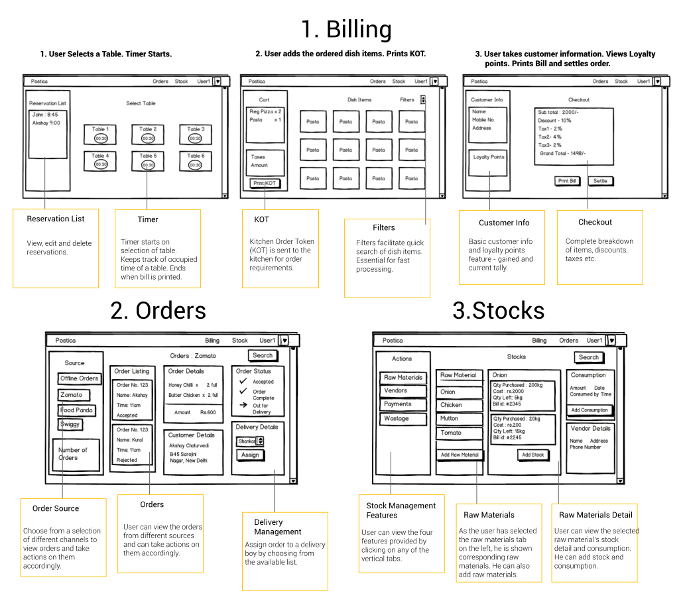

Objective
A centralized platform to manage restaurant operations smoothly.
A single dashboard to display all orders from multiple sources to ease off the process of tackling multiple orders.
Undertake basic operations like bill creation and stock management.
My Role
Conducted Interviews. Literature Review. Wireframes.Product Design.
Tools
Balsamiq Mockups. Adobe Illustrator.Paper Sketching.
Background
- With the advent of cheaper smartphones coupled with declining costs of mobile data, an increasing number of people are using online portals to order food. In such a situation, restaurant managers are faced with a major problem of catering to food orders from multiple sources.
- A two person team. My partner having worked in the Food and Beverage industry had an idea about the current market. At the time, there was no POS system that was offering a centralized dashboard to manage all orders.
- The three major players in online food order segment are: Zomato, Foodpanda and Swiggy.
- The aim was to build a software which met the basic needs of running a restaurant.Upon receiving favorable feedback, we would proceed to building a more robust model.
Research
Conducted preliminary interviews with 4 different types of restaurants i.e. Fine Dining, Cafes, Casual Dining,Quick Service Restaurants.
Interviews were conducted in 25 restaurants in GTB Nagar and Noida sector 38.
Idea validation step. Understanding whether the usefulness of the one dashboard feature was of profound importance.
Formulated the questionnaire. Have a look at the entire questionnaire here.
Findings
Most Used Features:
- Billing
- Order Management
- Stock Management
None of the current players in the market had the one dashboard feature. About 15 out of 25 restaurants were more than eager to have the one dashboard feature.
Average price of POS systems close between 1k-2k per month.
More than 200 POS systems in New Delhi alone.
About 7 out of the 25 restaurants interviewed expressed their hardships on Delivery management.
Product Components

Storyboard

There is a plethora of orders coming in from different sources. The user has a different app for each source i.e. Zomato, Swiggy, Foodpanda. In addition there is a huge queue of customers waiting to place their order. Our users suffer from such chaos during certain peak hours. For him to ensure optimal customer satisfaction, he needs a way to manage such pandemonium of requests so that the restaurant’s business doesn't suffer.

He goes on to the dashboard and starts processing orders. As he is taking orders he observes that there is a bulk order with a lot of add-ons. He is able to finish processing orders quickly as the option to add add-ons is within each dish. In addition with the help of his chosen filters he is able to retrieve dishes with ease.
The bill is printed and the payment is done via a debit card. Furthermore, he adds customer info into the database, this helps in providing analytics for the future. If in any situation, the order needs to change, the user can visit the orders page and modify the order accordingly.
In order to tackle the numerous online orders, he is able to filter the orders from different sources from the orders page. The user can identify new orders from the old ones. He can also see the required customer information and any special instructions if necessary. From there, he can confirm or reject the order. On confirming, he can also assign the order to a delivery boy.All of this from a single page.
In order to take care of stocks in the restaurant. the user goes to the stocks page. There he can add or edit a new stock along with adding consumptions of a particular stock. He is also able to manage payments made to vendors and also the suppliers details. In order to keep track of wastage of raw materials, he goes on to the waste management tab and inputs the details of the raw material.
Taskflow : Order Processing

Wireframes
Initial Designs : Low Fidelity

Design Iterations
- After showing the mockups to some users, we decided to scrap the timer. Users weren't convinced with the validity for the feature and it also encumbered the basic order taking process. The timer was put in the future endeavors section.
- The reservations list in the select table page was removed and replaced with orders list. This was done because the actions to be done on order list were of greater importance than reservations.
- Divided the stock raw materials page into separate categories of information. Each category expounds further on previous information.
- Removed customer details on dish selection page and moved it to the checkout page.
Final Design